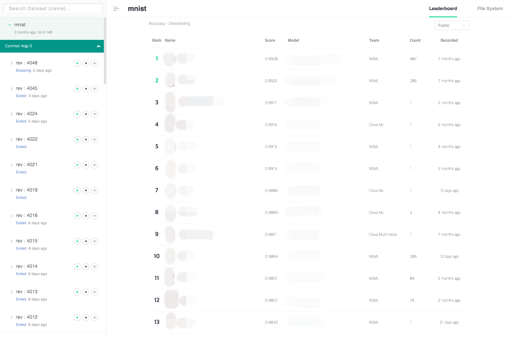

Leaderboard¶
You can check the leaderboard by clicking the dataset on the left of the main screen. The leaderboard is the list of the models that are ranked according to the evaluation.
The score of sessions submitted with the nsml submit command is displayed.
The results of the submitted session are updated in the leaderboard in real time.
Submit session with nsml submit command